Famous For
Unique Geography
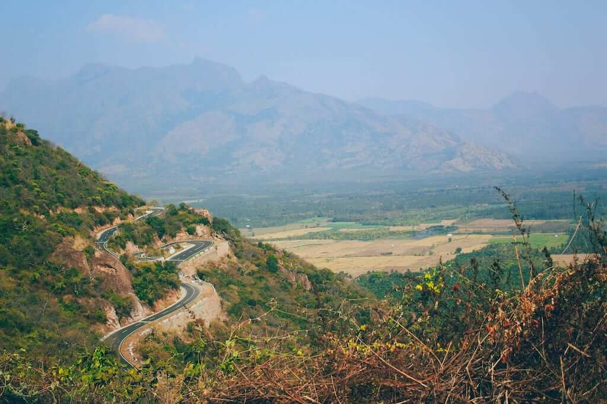
Houseboats
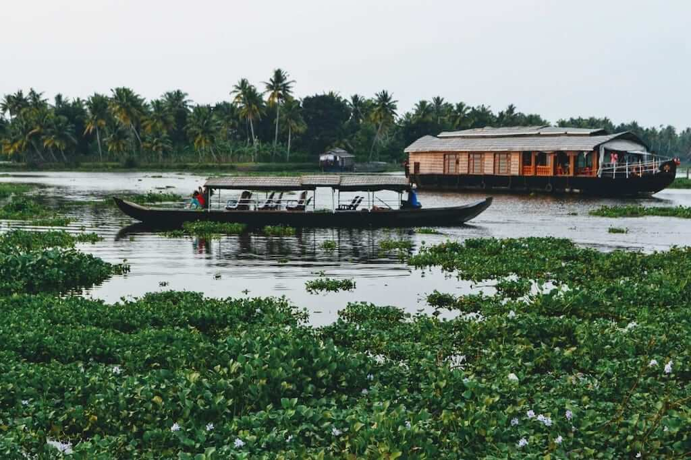
Kochi
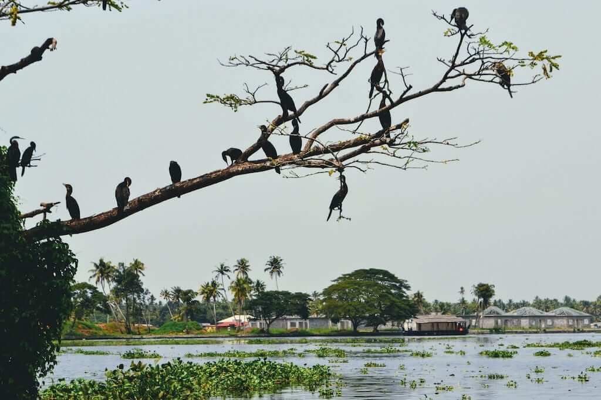
Beaches
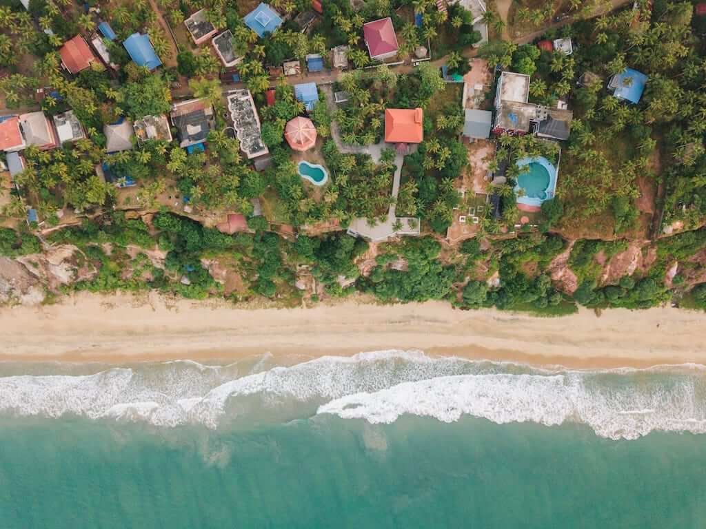
Natural Beauty
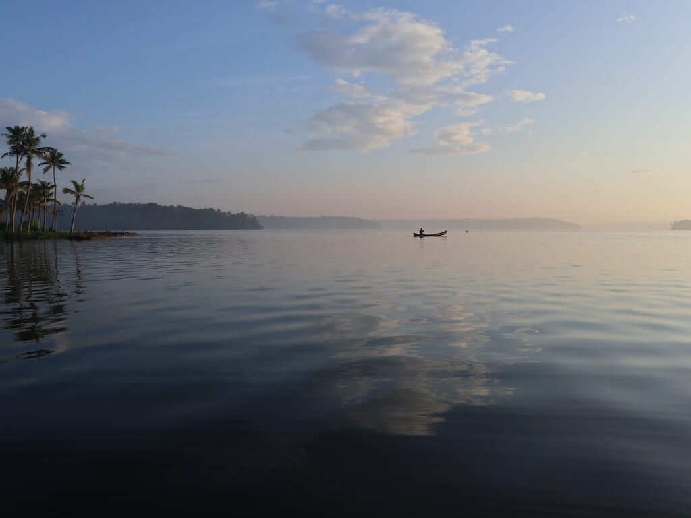
Padmanabha Swamy Temple
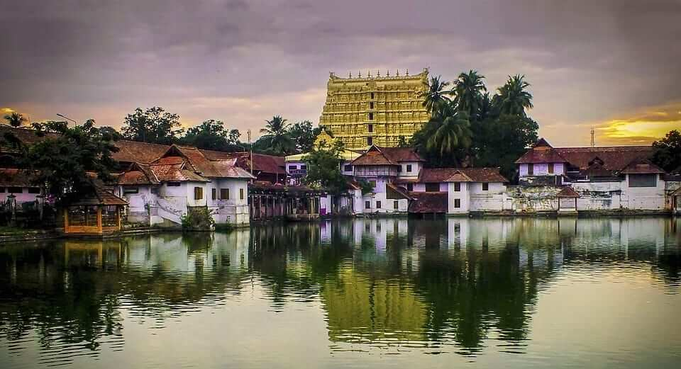
Thrissur Pooram
Eco-tourism
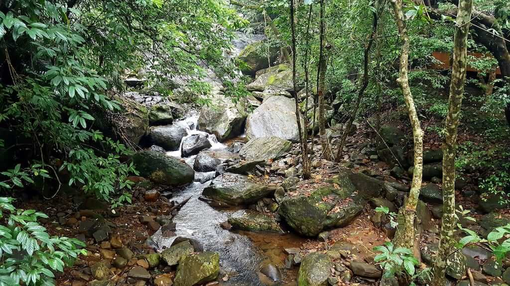
Culinary Experiences
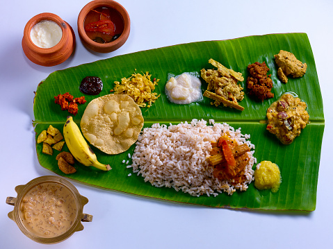
Ayurvedic Treatments
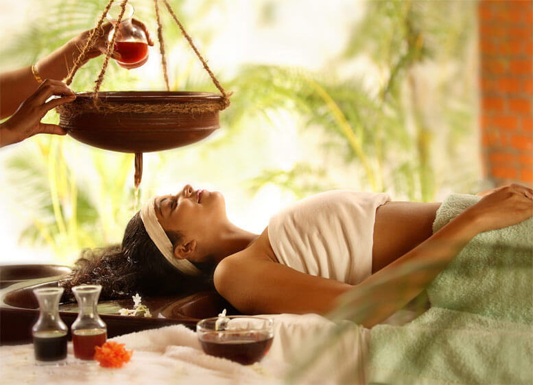
Tea and Coffee Plantations
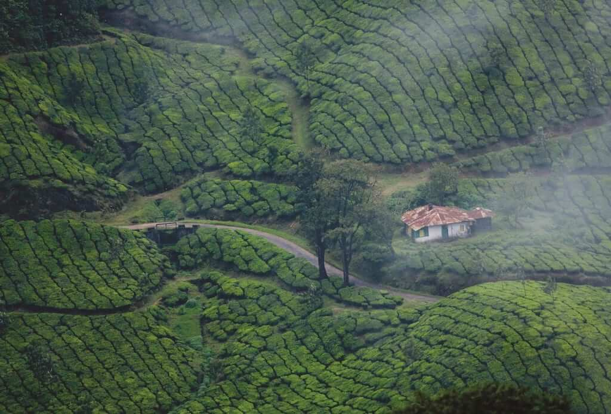
S.M. Street
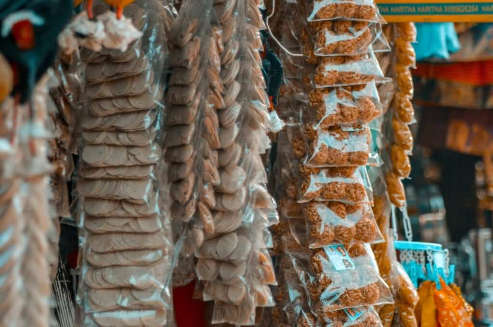
Kerala falls in the Southern part of India and has a unique geography. It is home to luscious green hills, valleys, mesmerizing waterfalls, serene backwaters, and beautiful beaches. You can have a relaxing time in the exotic hill stations or go for a safari in the wildlife sanctuaries. You can also have an unforgettable time on the pristine golden beaches.
The houseboats were certainly one of my personal favorites in Kerala! These dot the frequently mentioned backwaters of the region. You will be surprised when you enter these slowly moving barges. They offer all the comforts of a hotel room, if not more!
Alappuzha is also known as the ‘Venice of the East’ and it offers the best houseboat experiences. I assure you that you will see nature from a different perspective when you are on a houseboat. It will give you a view of some of the inaccessible rural areas of Kerala as well.
Kochi has a rich history – it is believed that numerous Chinese, Arab, Portuguese and Dutch voyagers made their way here. It is undoubtedly one of the most photographer-friendly destinations in Kerala. It leans more towards the commercial side and is a large-scale supplier of spices internationally!
That said, you certainly have to go on a shopping spree to carry back home the most authentic spices, sandalwood, and perfumes from Kochi. Other than this, it has numerous scenic spots; the Dutch Palace and Wazhachal Falls being the most popular.
If you have had too much of the valleys and hill stations (although I don’t believe in such a thing), don’t worry. Kerala has you covered!
If someone asks me ‘What Kerala is famous for?’ I certainly never miss out on the beaches. The jaw-dropping beauty of the backwaters and hill stations might fall short for you (again, which is not possible). But, the beaches like Kovalam, Varkala, and Kappad still will be the reasons to cherish your visit to Kerala!
This has already been mentioned numerous times, but Kerala’s natural beauty can’t be emphasized enough.
If you want to embark on an adventurous trek, you can go to Thekkady. If you are looking for a slightly toned-down, silent retreat, you can take up a nature trail.
Kerala is known for several national parks, too. Periyar National Park is perhaps the most popular, with rare tigers and herds of elephants being a delight to be amongst. You can take a walk along the blissful Periyar Lake and view the elephants feeding on the water!
This temple in Thiruvananthapuram is undoubtedly one of the most famous things that Kerala is famous for. A few years back, 1 trillion dollars worth of treasure was discovered in the Padmanabha Swamy Temple premises!
Other than being probably the richest religious shrine in the world, the temple finds several mentions in religious Hindu Texts such as the epic Mahabharata. You should certainly visit it to witness a great fusion of authentic Chera and Dravidian styles of architecture.

If you feel like tapping into your spiritual side during your visit to Kerala, then you should attend the Thrissur Pooram.
This is known as the ‘mother of all temple festivals’. It is a riot of vibrant processions marked by elephant parades and local music. The other remarkable things about this festival include a display of caparisons, firework shows, and a farewell ceremony.
This festival is ordinarily observed in April or May. But, there is no exact date, as it depends on the rising of the ‘Pooram’ star in the sky. You can look up the exact date of the festival for the year you are planning to make your trip to Kerala!
Eco-tourism is perhaps one of the best initiatives ever for travelers!
The Kerala government has defined programs to take you to various offbeat places away from the tourist maps. These eco-tourism destinations are silent, serene, and slightly away from the regular hustle and bustle. These are your best bet when you have had enough of all that Kerala is famous for! You’ll be spoilt for destinations to choose from.
I highly recommend the nature trail through the woods of Aralam and the trip to Dhoni waterfalls. These trips will certainly allow you to have an up-and-close rendezvous with nature. What’s more, these planned trips start from as low a price as Rs.100 ($1.30) per person! You can find out more about the eco-tourism plans here.
Kerala is not called the ‘land of spices’ for no reason. One of the specialties of Kerala is the unique food varieties it boasts of. It is a one-stop destination for culinary enthusiasts and foodies!
If you ask the question, “Kerala is famous for which food?” the answer would be, other than the mouth-watering seafood, numerous authentic Indian dishes bursting with flavor, are ready to be hogged on by you!
You cannot miss ‘Sadya’ while you are here. Sadya is a feast comprising almost everything that there is to cover in vegetarian cuisine. It can have a spread of up to 28 dishes in one go! It consists of everything from red rice, pickles, and side dishes to desserts; all served on a plantain leaf!
Ayurveda is considered to be the oldest health care system in the world. Kerala is probably the only place in the entire world where Ayurveda is used as a mainstream method of treatment.
Moreover, Kerala is the place where the highest number of Ayurvedic practitioners in the whole wide world reside!
With that premise, I am sure you have gotten a wholesome picture of why you might want to sign up for an Ayurvedic treatment here. The ‘Panchakarma’ is a popular Ayurvedic treatment that uses medicated oil, milk, and herbs.
The sprawling tea and coffee plantations with a delicious fragrance wafting in the air are one of the highlights of Kerala.
The regions of Munnar, Kochi, and Periyar are replete with these plantations. You can take a mesmerizing drive through these gardens and you will get a slice of peace and beauty. These gardens are extremely picturesque and have served as backdrops for various mainstream films!
The S.M street or the ‘Sweetmeat Street’ is another thing that Kerala is known for. This street is a very busy shopping stretch and offers everything under the sun. Local sweets, spices, textiles, handicrafts, and toy shops dot this street. It is one of the perfect places to do some shopping and take memorable souvenirs back home.